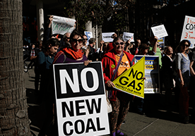
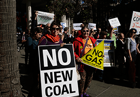

Climate Action
Climate change consistently rates as the #1 issue for GetUp members.
It is both urgent and important; a campaign we’ve been fighting to win for far too long considering we have such little time left in which to turn things around. This year the GetUp community not only helped deliver record numbers on the ground, we also started to pave the way for innovative tactics that have the potential to move millions of dollars out of climate destruction.
On November 17, a staggering 60,000 of us came together in 130 beautiful events across the country for GetUp’s National Day of Climate Action. We created news headlines across the country, with ABC, SBS, 9, 10, SKY, WIN, and 7 all covering the rallies. Our movement had in fact pulled off one of the largest rallies for climate action in Australia's history - earning the title of 'Abbott's Worst Enemy' for our work in climate activism.
The national rallies were attended by a broad cross-section of society: with religious figures, young activists and politicians standing shoulder to shoulder with firefighters and farmers. Supporters ranged from the very young to grandmothers and grandfathers in their nineties, rallying on behalf of future generations. Some of the most outstanding efforts were from GetUp members in regional areas, where hundreds of people gathered in small towns around the country. Regional and country Australia's contribution was a tremendous part of what made the National Day of Climate Action so great. When our politicians turned on the evening news that day, one of the first things they heard was that GetUp members and residents in over 130 towns were demanding government do more to tackle climate change. And when politicians opened their newspapers the next day, they were forced to read the same.


Because of GetUp members in regional and country Australia, tens of thousands of Australians had the opportunity to participate locally in the National Day of Climate Action and contribute to such an important cause. Many of you told GetUp staff that although one person was registered as the organiser, there were lots of people and local organisations who passionately dedicated their time and energy to the organising effort.
All in all, the day garnered more than 140 media articles. Following the events, thousands of GetUp members contributed to fund the ongoing climate campaign. As the first significant mobilisation following the 2013 Election, GetUp members significantly changed the conversation about the Abbott Government’s climate policy and the public mood.
The diverse crowd of the national day of action also helped spawn the launch of Australians for Action, a mini-site which represents the broad community of notable Australians urging our government to take greater, stronger, more ambitious actions on climate change. Ambassadors include some of Australia’s most well-known and respected figures: actors, performers, scientists, TV personalities, business professionals; as well as everyday folk. To date, more than 100,000 people have signed on!
These efforts also paved the way for further climate work, as we turned to focus the Great Barrier Reef, stop coal seam gas and help consumers move their money away from organisations that profit from climate destruction.
People power evolves
Since the Abbott Government came to power in September, the denial and disrespect of climate science has been in the spotlight. Their very first official act was to abolish the Climate Commission, the independent body which advised the Government on climate change; along with removing key ministerial positions on climate change and science and axing hundreds of jobs at the CSIRO. People power has never been more needed.
Partnerships for change
Throughout the year, GetUp members also participated in initiatives from across the environmental movement. In early 2014, GetUp teamed up wth 350.org to urge corporations to do better on climate. GetUp members who are also customers of UniSuper emailed the Board and the National Tertiary Education Union, calling on UniSuper to measure and disclose its fossil fuel exposure, reduce its fossil fuel exposure across all portfolios, and ultimately divest and go fossil free.
Throughout the year, GetUp members also participated in initiatives from across the environmental movement. In early 2014, GetUp teamed up wth 350.org to urge corporations to do better on climate. GetUp members who are also customers of UniSuper emailed the Board and the National Tertiary Education Union, calling on UniSuper to measure and disclose its fossil fuel exposure, reduce its fossil fuel exposure across all portfolios, and ultimately divest and go fossil free.
In November 2013, 12,724 members made submissions to the Climate Change Authority – a whopping 99.9% of the total submissions. The resulting report called for an overhaul of expectations – including a 19% stronger emissions reduction target by 2020, and 40%-60% by 2030.
In January 2014, 14,585 members expressed their views on the Direct Action plan through a membership survey. The results of the survey shaped GetUp’s contribution to the Senate Inquiry on the Abbott Government's climate policies Direct Action plan.
The following month, the Abbott government announced the panel to conduct the Renewable Energy Target (RET) Review. The review would be headed up by Dick Warburton, a self-confessed climate sceptic, and panellists with significant connections to mining and industry. This offered a key rapid response moment for members to stand up for our nation's renewable energy future. GetUp members were a part of raising serious questions about the Warburton review and its recommendations given Dick Warburton’s climate scepticism and industry connections. Thousands of GetUp members shared content on Facebook, highlighting the farcical appointments.
One day may this serve as an historical document, for our grandchildren to marvel at how hard we had to fight simply to evolve our way of doing business in order to protect the very planet that sustains us. Until then, we’ll keep working.
To find out more about the fight for action on climate change, click here.
CLOSE


Social Media
During the 2013/14 financial year, GetUp’s social media presence grew at an unprecedented rate. Our total number of Facebook likes more than doubled, growing from 63,188 to 184,889: an incredible 192% increase. Similarly, GetUp’s Twitter following grew from 86,342 to 94,753.
june 2013
63,188
june 2014
184,889
june 2013
86,342
june 2014
94,753